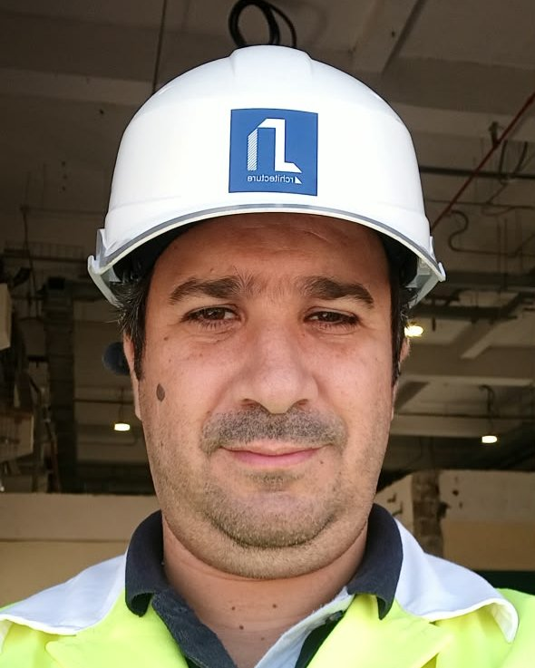

L'agence
«L'architecture dépasse le simple acte de construire. C'est une manière d'être.»
Bureau d'étude agréé et inscrit au tableau national de l'ordre des architectes algériens. Depuis sa création le 18 novembre 2015, l'équipe pratique l'architecture dans sa dimension humaine et environnementale.
Étudier, planifier, modéliser (2D et 3D), estimer le budget nécessaire et conduire ou accompagner un projet jusqu'à son terme, en veillant à l'application des réglementations et normes en vigueur.

Architecte agréé · plus de 16 ans d'expérience
Diplômé de l'École Polytechnique d'Architecture et d'Urbanisme (EPAU), architecte d'État option Urbanisme Opérationnel, Sofiane Iratene a mené des projets d'habitat, d'équipements publics et d'installations industrielles.
Il a exercé comme architecte chargé d'études, chef de projet et gérant, en bureaux d'études (B.E.T El-Mouhandes, B.E.C.O.M.E scp, B.E.A.U Kamel Hassani), avant de fonder son cabinet en novembre 2015.
Outils informatiques
Une expérience riche, de l'industrie aux équipements publics et au particulier.
Postes blindés (Yasmine I et II, Aïn Benian II, Club des Pins, Bab Ezzouar II, Eucalyptus), pour des projets de maîtrise d'ouvrage Sonelgaz, et base de vie à Adrar.
Résidence universitaire de 3 000 lits à Tamda (Tizi Ouzou), 500 places pédagogiques à l'ENS de Kouba, unités et hôtels (EPHAM) pour le MDN, CRF Zemmouri.
Réaménagement et réhabilitation de sièges administratifs, études d'aménagement et de décoration d'intérieurs, régularisation de constructions, dossiers de permis de construire et suivi des travaux.